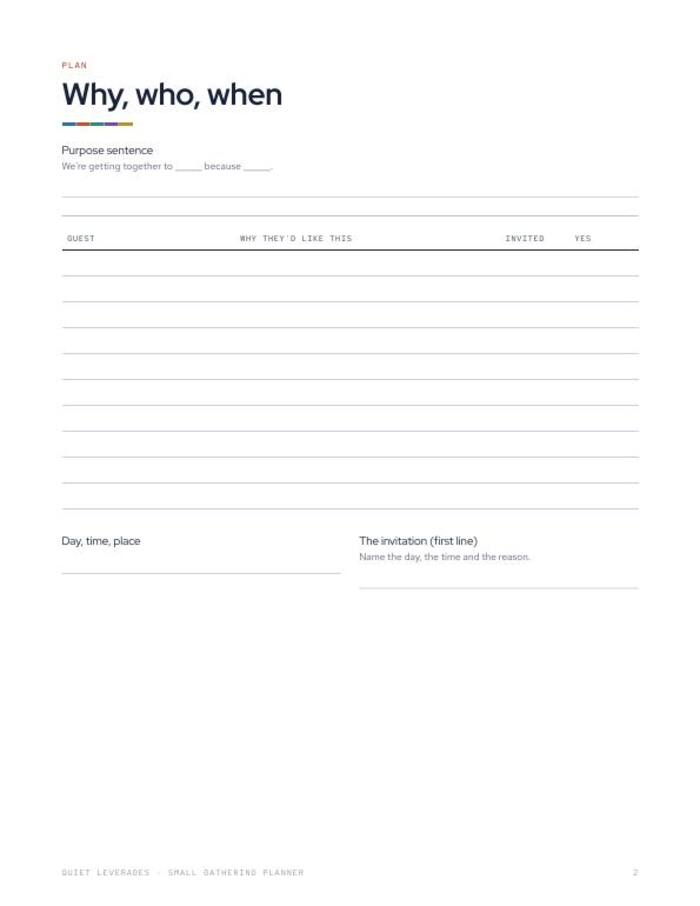
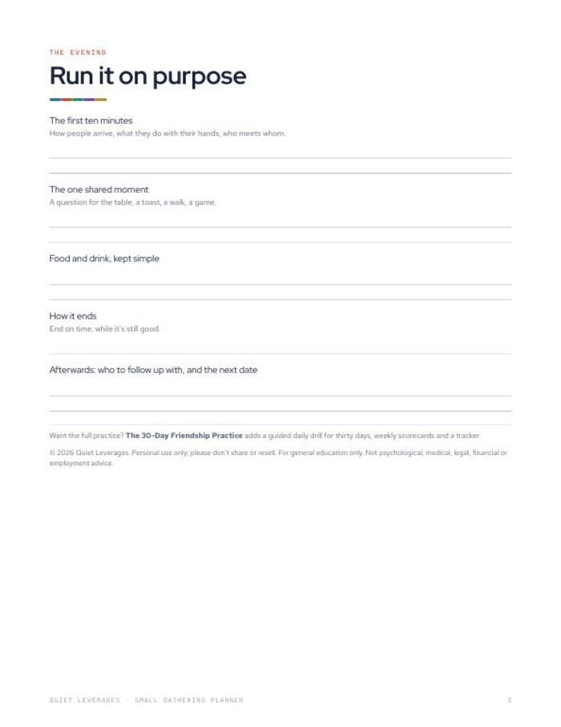
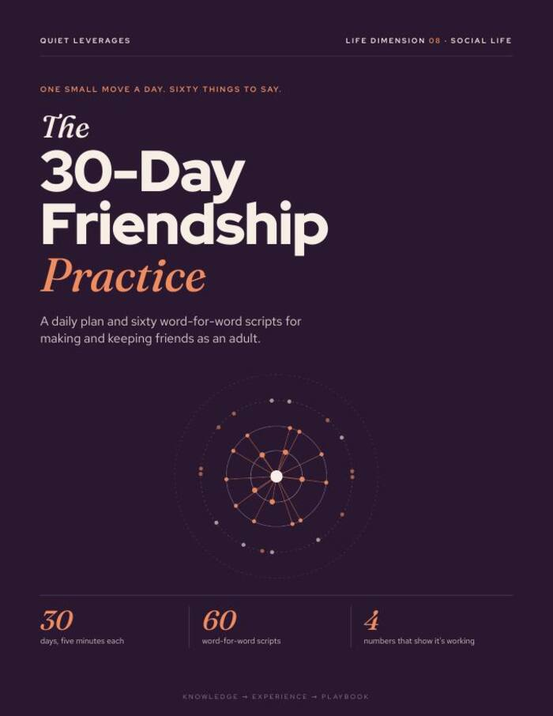
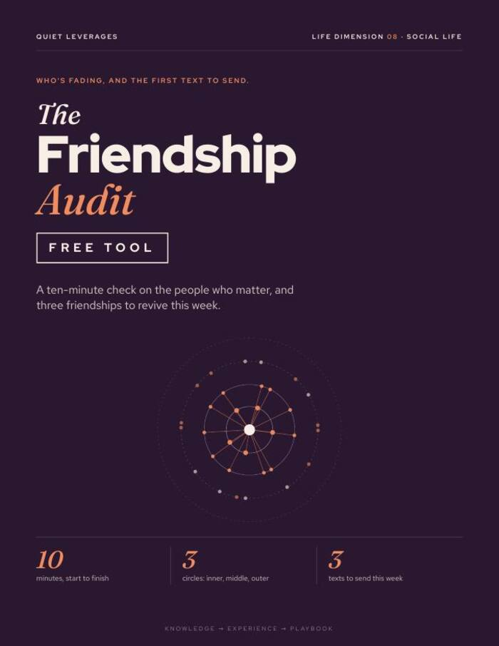

A good gathering starts with one sentence about why, not a menu.
Plan a dinner, a walk or a game night for six to ten people: a purpose sentence, a guest list, an invitation, and a follow-up.
Instant download. Print it or use it on a tablet with any PDF app. Prints fine on A4 at 'fit to page'.

Start with why
Write one purpose sentence first. If it is vague, the evening will be too.
An invitation with a reason
Name the day, the time and why this group, in the first line.
A follow-up page
So the evening leads somewhere: who to follow up with, and the next date.
sentence to set the purpose
opening planned
follow-up page
In-person time with friends fell from about 60 minutes a day in 2003 to about 20 in 2020. A small gathering with a purpose puts a few hours back on the calendar.
American Time Use Survey dataWhat you leave with
A guest list with a reason
Write why each person might like this, so the room has something in common.
A plan for the first ten minutes
Who arrives, what they do with their hands, who meets whom.
One shared moment
A question for the table, a toast, a walk or a game that turns guests into participants.
An evening that leads somewhere
Name who to follow up with and the next date before the night is over.
Three pages from purpose to follow-up
Write the purpose first. Invite with a specific day, time and reason.
- Purpose sentence, guest list and invitation.
- The first ten minutes and one shared moment.
- Follow-up page so the evening leads somewhere.
- Printable PDF. US Letter, 3 pages, prints on A4 at 'fit to page'.

Why, who, then the evening
Write the purpose
One sentence about why you are getting together.
Invite with a reason
A specific day, time and reason, to people who might like each other.
Plan the evening
The first ten minutes, one shared moment, and the follow-up.
A good fit if you want to host, but keep not doing it
Use this if
- You want to bring a few friends together and are not sure how.
- You want a dinner, a walk or a game night with some shape.
- You want the evening to lead to a next date.
Skip it if
- You want a menu or event-styling guide. This plans purpose, people and moments.
- You want a daily practice. See The 30-Day Friendship Practice.
- You are planning a large event. This is for six to ten people.
Why gathering small helps, in numbers
of adults aged 30-44 are frequently or always lonely, the highest of any age group.
Harvard Making Caring Common, 2024of time together to move from acquaintance to casual friend; about 90 to friend, 200+ to close friend.
Jeffrey Hall, University of Kansas, 2018What readers say about Small Gathering Planner
Plan the evening in one sitting
Three pages that take you from a vague 'we should get together' to a date.
- Purpose sentence, guest list and invitation
- First ten minutes and one shared moment
- Follow-up page
Before you decide
How many people is it for?
It is written for six to ten people who might like each other.
What format is it?
A printable PDF, US Letter, 3 pages. It prints fine on A4 at 'fit to page'.
Can I use it on a tablet?
Yes. Any PDF app that lets you write on a page will do, or print it.
Do I need to cook?
No. The page covers food and drink in a line, kept simple. It works for a walk or a game night as well.
Is it advice?
No. It is a planning page. General education only.
The next step after this one

The 30-Day Friendship Practice
One small social drill a day for thirty days, with sixty scripts for the moments that matter.

The Friendship Audit
A ten-minute check of who is in your life, who is fading, and three texts to send this week.
Pick a date and write the why.
One sentence, one guest list, one invitation.
Get the planner for $7One-time $7 on Gumroad. Instant download.